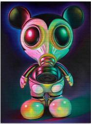
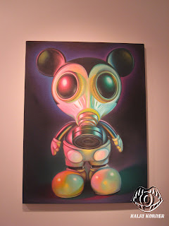
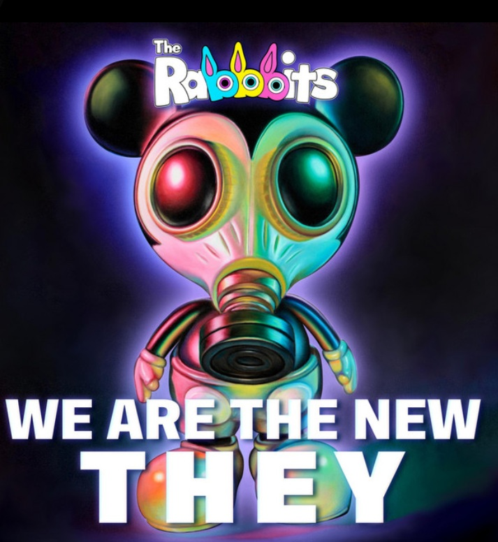

Literature
“Ron English is selling Face Masks for a Great Cause!”, Street Art News, 2020.

“Ron English on His Upcoming Show "Universal Grin," at Matthew Namour Gallery in Montréal”, Juxtapoz, 2018.
__p003.jpg?v=20260724071411)
“Ron English on His Upcoming Show "Universal Grin," at Matthew Namour Gallery in Montréal”, Juxtapoz, 2018.

Provenance
Private collection.
Exhibitions
Popaganda in Japan, Public Image. 3D, Tokyo, Japan, July 1–18, 2011.

Last Gasp 46th Anniversary — Group Exhibition, 111 Minna Gallery, San Francisco, California, US, April 1–30, 2016.
Universal Grin, Galerie Matthew Namour, Montreal, Quebec, Canada, October 18–November 18, 2018.

Last Gasp 46th Anniversary — Group Exhibition, 111 Minna Gallery, San Francisco, California, US, April 1–30, 2016.
Notes
This composition was later adapted by the artist as a related limited-edition blotter print titled Gas Mask Mickey.
The image was also used as album-cover artwork for The Rabbbits’ We Are the New They.
Ancillary Documentation





Selected Online Circulation
Selected examples of the work’s online circulation, reproduction, or discussion. This list is not exhaustive; it is intended to document representative appearances of the image beyond formal exhibition and publication records.